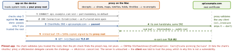

debugging · folio
In one line: An HTTPS debugging proxy is a consensual man-in-the-middle: it terminates TLS with a leaf certificate minted on the fly and signed by its own root CA — which you installed and trusted on the device — and opens a second TLS connection to the real server. Whatever refuses that root (pinning, Android’s default distrust of user CAs, clients that ignore the proxy) shows up as a failed handshake or no traffic.
Download PDF Print view LaTeX source


Four proxies, one trick
| Charles 5 | Proxyman | mitmproxy 12 | Burp | |
|---|---|---|---|---|
| port | 8888 | 9090 | 8080 | 8080, loopback only |
| CA page | chls.pro/ssl | proxy.man/ssl | mitm.it | burpsuite |
| decrypts | named hosts (* = all) | include list: apps, domains, wildcards | all but ignore_hosts | all but TLS pass through |
| extend | no scripts: Rewrite rules | JavaScript | Python addons, live reload | Java / Kotlin (Montoya) |
Every install makes its own root CA (Charles since 3.10); its private key can impersonate any site to every phone that trusts it.
Trusting the root, per platform
- Route: phone and Mac on one Wi-Fi; Settings → Wi-Fi → (i) → Configure Proxy → Manual: the Mac’s IP + port. The Simulator uses the Mac’s own network settings.
- iOS device: Safari → CA page → Settings → Profile Downloaded → Install (then listed in General → VPN & Device Management) → General → About → Certificate Trust Settings → full trust. Skip it and HTTP works while every HTTPS call fails; MDM and Configurator payloads are trusted at once.
- Simulator:
xcrun simctl keychain booted add-root-cert ca.pem, or drag the file onto its window; Charles (Help menu) and Proxyman automate it. - Android: apps targeting API ≤ 23 trust user CAs; API 24+ only system CAs, so your debug build opts in (below). From Android 11 a CA installs only via Settings. Someone else’s app: root, or an emulator with
-writable-system+adb remount, to reach the system store — since Android 14 roots also live in the updatable Conscrypt APEX. Emulator-http-proxy host:portsends all its TCP through the proxy.
Example — Android debug trust + a mitmproxy addon
<!-- manifest: android:networkSecurityConfig="@xml/nsc" -->
<network-security-config>
<debug-overrides> <!-- ignored unless debuggable -->
<trust-anchors>
<certificates src="user" overridePins="true"/>
</trust-anchors> <!-- user CAs + they skip pins -->
</debug-overrides>
</network-security-config># fail_feed.py -- mitmdump -s fail_feed.py (reloads on save)
from mitmproxy import http
def response(flow: http.HTTPFlow):
if flow.request.path.startswith("/v1/feed"):
flow.response.status_code = 503 # test the error UI
flow.response.headers["Retry-After"] = "30"The minted leaf must pass the device’s rules
iOS 13+ rules bind every TLS server certificate, minted ones too: DNS name in the SAN (CN ignored), SHA-2, RSA ≥ 2048, EKU serverAuth, ≤ 825 days. ATS adds TLS 1.2+, ECDHE, AES-128/256 and accepts a user- or admin-installed anchor — no exception needed. Exempt: the 398-day cap (user-added roots), Apple’s CT policy (public CAs only) and Android 17’s default-on CT (skips the user store).
Symptom → cause → fix
| symptom | cause | fix |
|---|---|---|
| nothing arrives | phone cannot reach the Mac: IP / port, Wi-Fi client isolation, Burp on loopback | same network; listen on all interfaces |
| one app is missing | ignores the system proxy: Flutter HttpClient (direct unless findProxy), many Android apps | findProxy → "PROXY host:8888"; mitmproxy local / wireguard |
host is a bare CONNECT, no body | not on the SSL Proxying list | add it (* = all) |
| one host fails, the rest decrypt | pinning (Apple’s App Store too) | debug: overridePins; else ignore_hosts |
| fails while held at a breakpoint | client timeout: OkHttp 10 s, URLSession 60 s | release fast; longer timeout in debug |
| gRPC shows 200, call failed | status rides the trailers: grpc-status | read the trailers |
| HTTP/3 missing | CONNECT tunnels TCP (UDP needs RFC 9298 CONNECT-UDP); QUIC is UDP | mitmproxy reverse / local / WireGuard mode |
What you can do with it
| Map Local | answer a URL from a local file: empty, huge, malformed JSON |
| Map Remote | serve some live URLs from a dev server, no rebuild; HTTP ↔ HTTPS |
| Rewrite | regex find / replace on headers, URL, query, body (Charles’ four rule types) |
| Breakpoints | hold a request or response, edit it, then Execute / Abort / Cancel |
| Throttle | Charles: bandwidth + latency · Proxyman: 2G … Wi-Fi, “100% lost”, per domain |
| Repeat | replay; Charles Repeat Advanced: iterations + concurrency (races, idempotency) |
| Export | HAR 1.2 (Proxyman; mitmproxy hardump) |
Binary payloads
Protobuf has no field names on the wire: Charles and Proxyman read a FileDescriptorSet (protoc -oapi.desc api.proto), mitmproxy 12 a .proto (protobuf_definitions; edit as YAML, re-encoded). No schema: field numbers + wire types only (protoc --decode_raw). gRPC = application/grpc on HTTP/2: 1-byte flag + 4-byte big-endian length + message.
Beyond the proxy
Raw TCP / UDP: mitmproxy tcp_hosts / udp_hosts still MITM TLS and DTLS. No proxy at all (iOS): Instruments HTTP Traffic (Network template: URLSession headers + bodies, decrypted) · scheme env CFNETWORK_DIAGNOSTICS = 1–3 · Proxyman Atlantis (swizzles NSURLSession, Bonjour to the Mac; inspect only) · rvictl -s <UDID> → rvi0 → Wireshark (all packets, encrypted).
Traps
- “Charles reads any app’s HTTPS” — only with a CA the device owner trusted, never through pinning; others’ apps need objection (Frida) or apk-mitm — authorised tests only.
- Pins off in debug only;
src="user"inbase-configships MITM to every user CA. React Nativefetchrides NSURLSession / OkHttp. - Done? Untrust the root, proxy off (Mac asleep = “no internet”). HAR files, HTTP Traffic traces and CFNetwork logs keep tokens in clear.